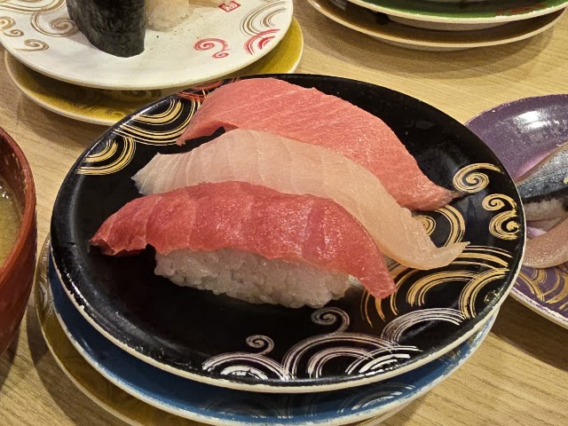
| 営業時間 | 月・火・水・木・金・土・日 11:00〜22:00 |
|---|---|
| 定休日 | なし(要最終確認) |
| 住所 | 北海道札幌市中央区北４条西２３丁目２−１７ |
| 予約 | 要確認 — ☎ 011-633-5500 ／ 公式サイト |
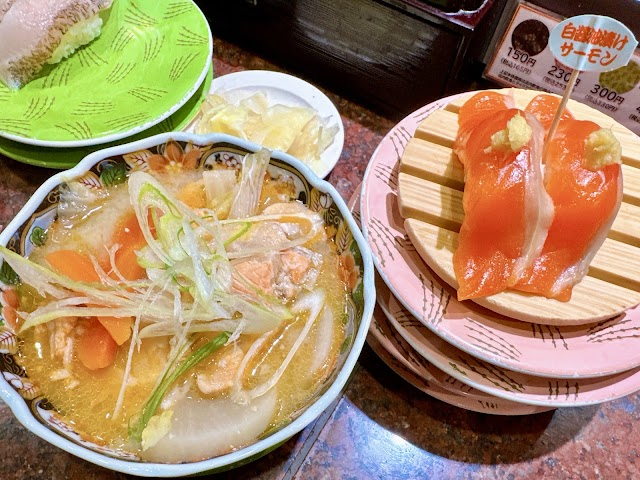
| 営業時間 | 月・火・水・木・金・土・日 11:00〜22:00 |
|---|---|
| 定休日 | なし(要最終確認) |
| 住所 | 北海道札幌市中央区北５条西４丁目 JRタワーステラプレイス ６階 |
| 予約 | 要確認 — ☎ 011-209-5330 ／ 公式サイト |
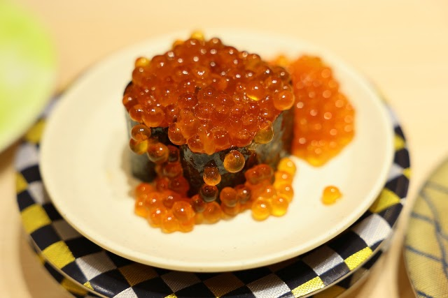
| 営業時間 | 月・火・水・木・日 11:00〜21:00 ／ 金・土 11:00〜21:30 |
|---|---|
| 定休日 | なし(要最終確認) |
| 住所 | 北海道札幌市西区発寒６条９丁目１７−１０ |
| 予約 | 可 — ☎ 011-661-2233 ／ 公式サイト |
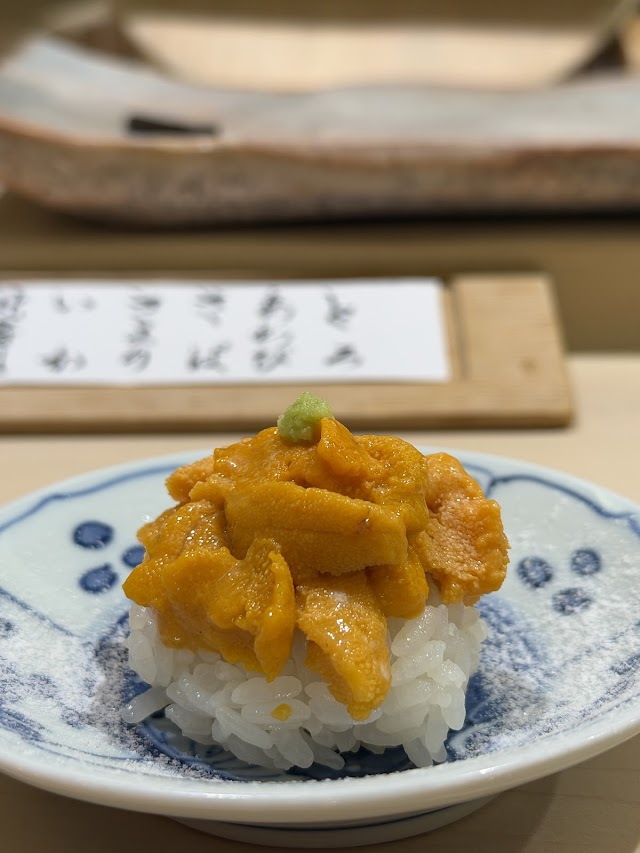
| 営業時間 | 月・木・金・土・日 11:30〜14:00, 17:30〜21:00 |
|---|---|
| 定休日 | 火・水曜 |
| 住所 | 北海道札幌市中央区北１条西２７丁目２−７ |
| 予約 | 可 — ☎ 011-612-0068 ／ 公式サイト |
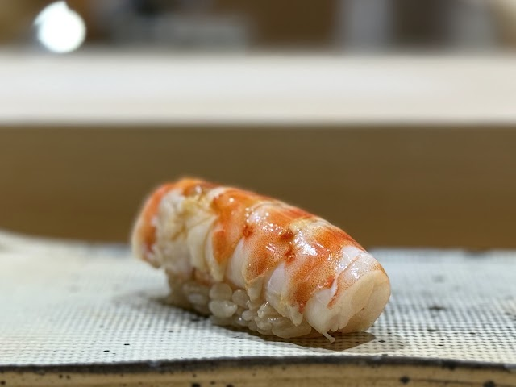
| 営業時間 | 月・火・木・金・土・日 17:00〜22:00 |
|---|---|
| 定休日 | 水曜 |
| 住所 | 北海道札幌市中央区北４条西２５丁目２−２ リヒトラーレ円山 1F |
| 予約 | 可 — ☎ 011-613-2221 ／ 公式サイト |
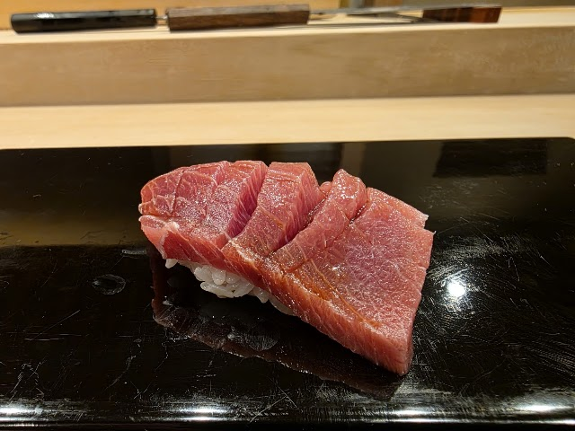
| 営業時間 | 月・火・水・木・金・土 17:00〜22:30 |
|---|---|
| 定休日 | 日曜 |
| 住所 | 北海道札幌市中央区北４条西６丁目 六花亭ビル ９階 |
| 予約 | 可 — ☎ 011-219-2202 ／ 公式サイト |
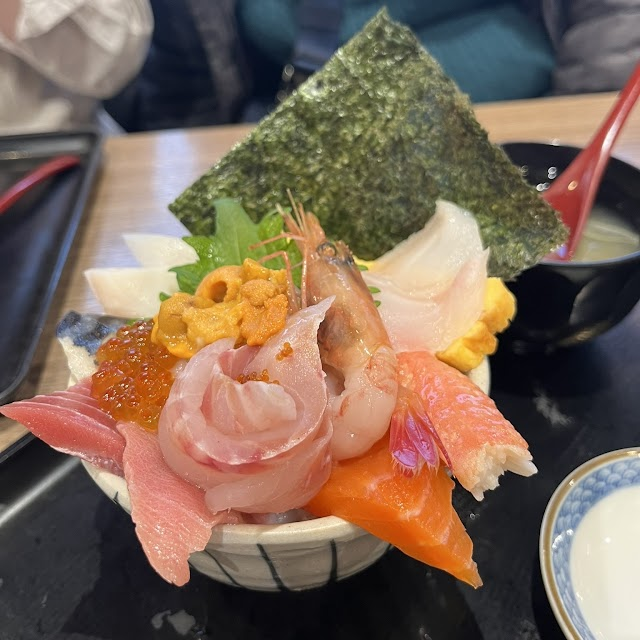
| 営業時間 | 月・火・木・金・土 7:30〜15:00, 17:00〜20:30 ／ 日 7:30〜15:00 |
|---|---|
| 定休日 | 水曜 |
| 住所 | 北海道札幌市中央区南３条東２丁目 |
| 予約 | 可 — ☎ 011-219-5252 ／ 公式サイト |
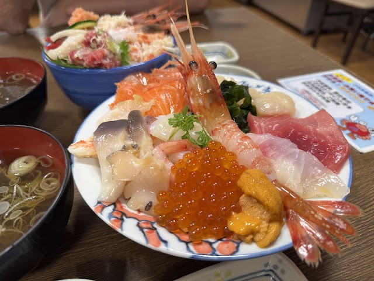
| 営業時間 | 月・火・水・木・金・土・日 7:00〜15:00 |
|---|---|
| 定休日 | なし(要最終確認) |
| 住所 | 北海道札幌市中央区北１１条西２２丁目１−２０ |
| 予約 | 要確認 — ☎ 011-621-3545 ／ 公式サイト |
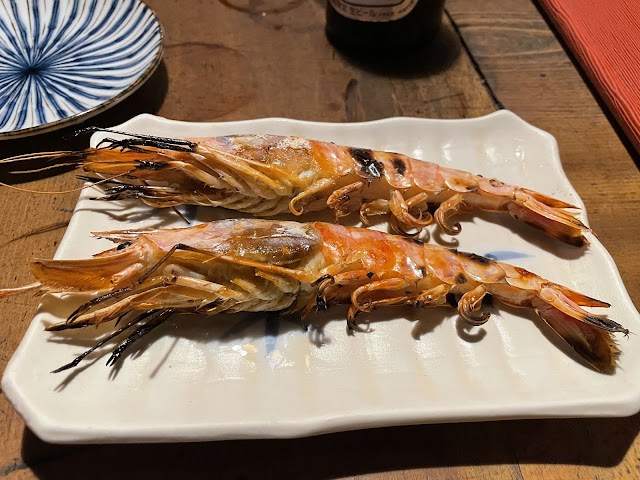
| 営業時間 | 月・火・水・木・金・土 17:00〜23:00 |
|---|---|
| 定休日 | 日曜 |
| 住所 | 北海道札幌市中央区南５条西５丁目１−７ |
| 予約 | 可 — ☎ 011-512-3570 ／ 公式サイト |
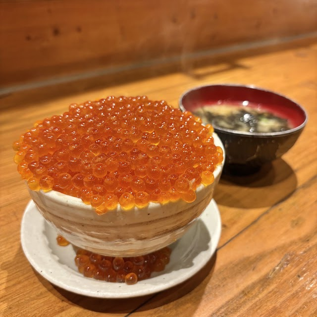
| 営業時間 | 月・火・水・木・金・土 18:00〜23:00 ／ 日 17:00〜22:00 |
|---|---|
| 定休日 | なし(要最終確認) |
| 住所 | 北海道札幌市中央区南３条西３丁目５−２ |
| 予約 | 可 — ☎ 011-222-8940 ／ 公式サイト |
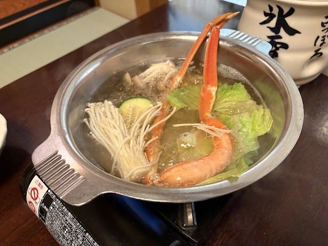
| 営業時間 | 月・火・水・木・金 11:00〜15:00, 16:30〜22:30 ／ 土・日 11:00〜22:30 |
|---|---|
| 定休日 | なし(要最終確認) |
| 住所 | 北海道札幌市中央区南５条西２丁目8−１０ |
| 予約 | 可 — ☎ 011-521-3046 ／ 公式サイト |
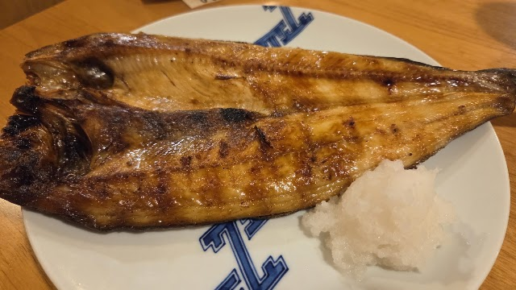
| 営業時間 | 月・火・水・木・金・土 16:30〜22:00 |
|---|---|
| 定休日 | 日曜 |
| 住所 | 北海道札幌市北区北７条西４丁目４−２ 地下１階 |
| 予約 | 可 — ☎ 011-716-1000 ／ 公式サイト |
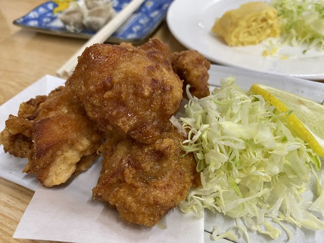
| 営業時間 | 月・火・水・木・金 13:00〜21:00 ／ 土 13:00〜20:00 |
|---|---|
| 定休日 | 日曜 |
| 住所 | 北海道札幌市中央区南１条東２丁目２ |
| 予約 | 可 — ☎ 011-231-6527 |
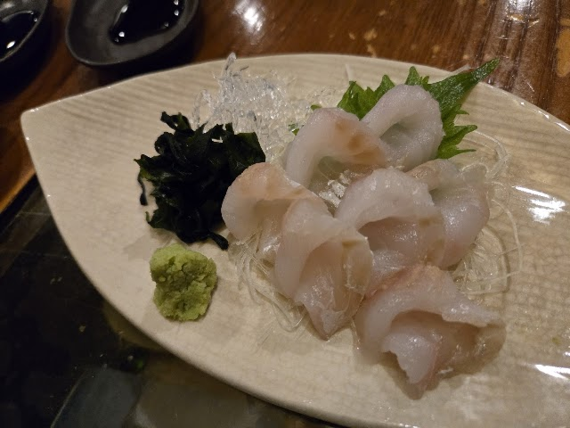
| 営業時間 | 火・水・木・金・土・日 17:00〜23:00 |
|---|---|
| 定休日 | 月曜 |
| 住所 | 北海道札幌市西区琴似１条５丁目１−２３ 居酒屋 美しの国 しゃこたん |
| 予約 | 可 — ☎ 011-616-7033 ／ 公式サイト |
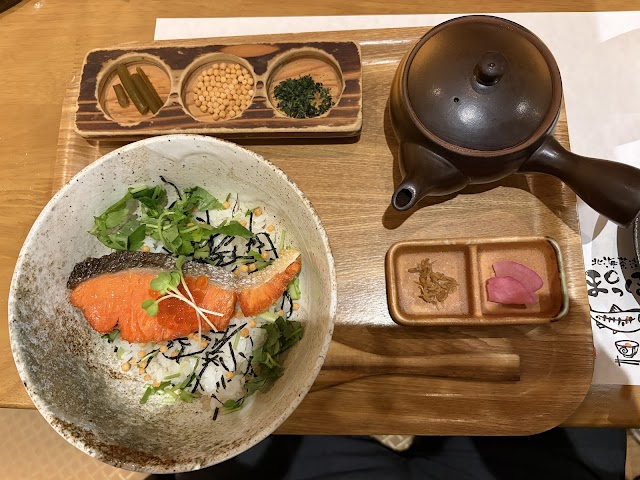
| 営業時間 | 月・火・水・木・金・土 18:00〜4:00 ／ 日 18:00〜1:00 |
|---|---|
| 定休日 | なし(要最終確認) |
| 住所 | 北海道札幌市中央区南５条西５丁目 ジャパンランドビル ７Ｆ |
| 予約 | 可 — ☎ 011-213-0343 ／ 公式サイト |
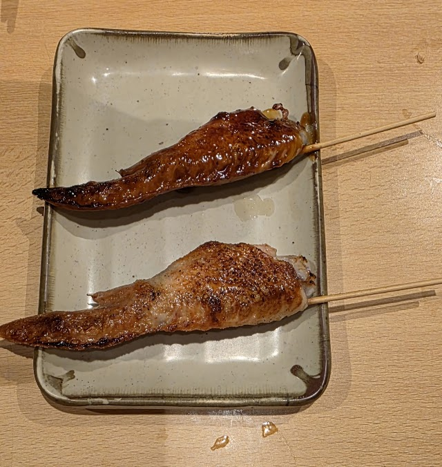
| 営業時間 | 月・火・水・木・金 16:30〜23:30 ／ 土・日 15:30〜23:30 |
|---|---|
| 定休日 | なし(要最終確認) |
| 住所 | 北海道札幌市中央区北４条西２丁目１−２５ 2F |
| 予約 | 可 — ☎ 011-233-2989 ／ 公式サイト |
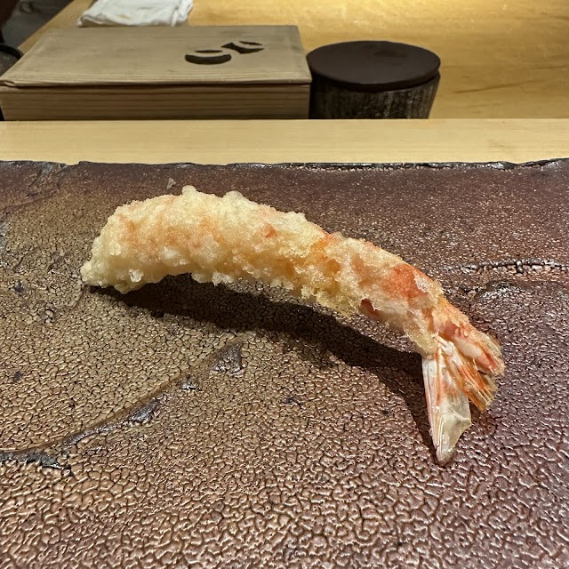
| 営業時間 | 月・火・水・木・金・土 18:00〜22:30 |
|---|---|
| 定休日 | 日曜 |
| 住所 | 北海道札幌市中央区南７条西４丁目１−２ 1F |
| 予約 | 可 — ☎ 011-552-5550 ／ 公式サイト |
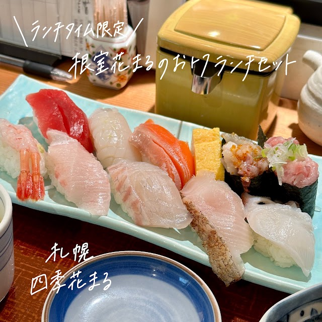
| 営業時間 | 月・火・水・木・日 11:00〜22:00 ／ 金・土 11:00〜23:00 |
|---|---|
| 定休日 | なし(要最終確認) |
| 住所 | 北海道札幌市中央区北１条西２丁目 1F |
| 予約 | 可 — ☎ 011-231-0870 ／ 公式サイト |
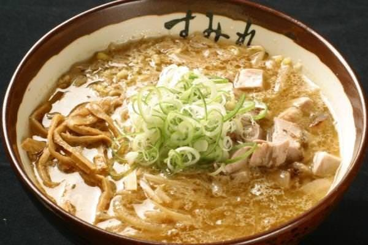
| 営業時間 | 月・火・木・金・土・日 10:00〜20:00 |
|---|---|
| 定休日 | 水曜 |
| 住所 | 北海道札幌市豊平区中の島２条４丁目７−２８ |
| 予約 | 要確認 — ☎ 050-5493-7160 ／ 公式サイト |
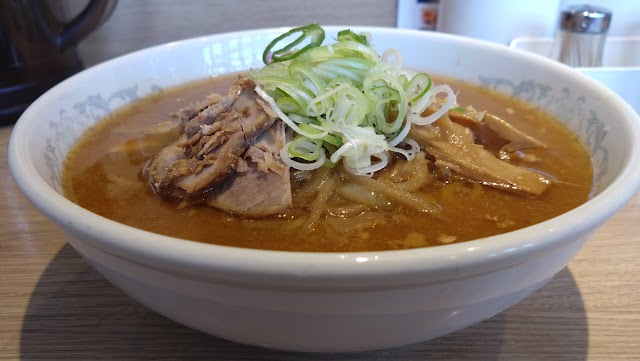
| 営業時間 | 火・水・木・金・土・日 11:00〜21:00 |
|---|---|
| 定休日 | 月曜 |
| 住所 | 北海道札幌市豊平区平岸２条１７丁目１−４１ シャトー純連 |
| 予約 | 可 — ☎ 011-842-2844 ／ 公式サイト |
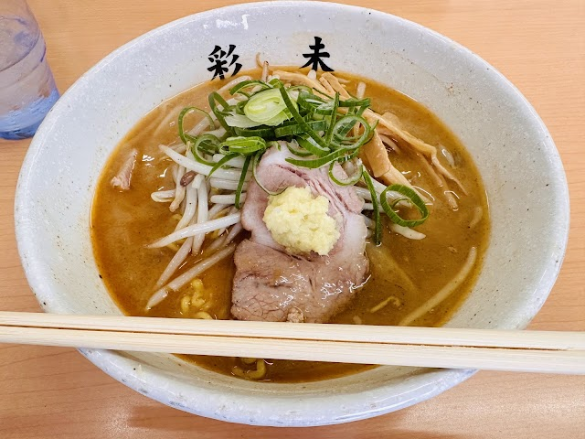
| 営業時間 | 火・水・木・日 11:00〜15:15 ／ 金・土 11:00〜15:15, 17:00〜19:30 |
|---|---|
| 定休日 | 月曜 |
| 住所 | 北海道札幌市豊平区美園１０条５丁目３−１２ |
| 予約 | 要確認 — ☎ 011-820-6511 ／ 公式サイト |
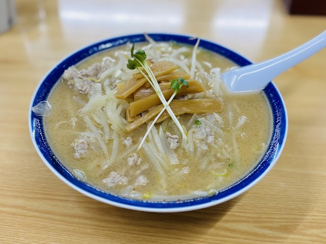
| 営業時間 | 火・水・木・金・土・日 11:00〜15:30, 17:00〜18:20 |
|---|---|
| 定休日 | 月曜 |
| 住所 | 北海道札幌市中央区南１条西３丁目２ 大丸藤井セントラル4F |
| 予約 | 要確認 — ☎ 011-231-0377 ／ 公式サイト |
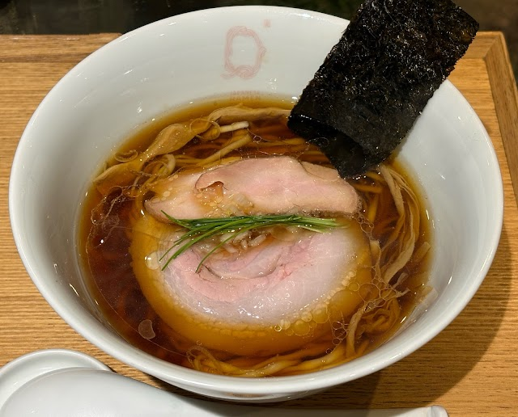
| 営業時間 | 月・火・水・木・金・土 11:00〜15:00 |
|---|---|
| 定休日 | 日曜 |
| 住所 | 北海道札幌市中央区北１条西２丁目１−３ りんどうビル B1 |
| 予約 | 要確認 — ☎ 011-212-1518 ／ 公式サイト |
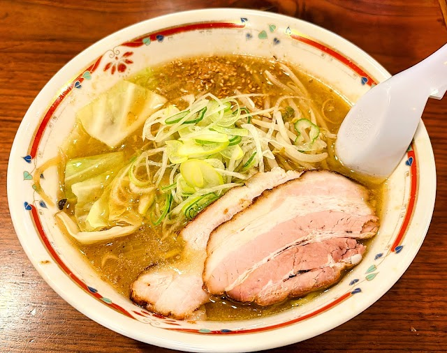
| 営業時間 | 月・木 17:00〜19:30 ／ 金・土・日 11:00〜15:00, 17:00〜19:30 |
|---|---|
| 定休日 | 火・水曜 |
| 住所 | 北海道札幌市中央区南１１条西１丁目５−１ タカイレブンハイム １Ｆ |
| 予約 | 要確認 — 公式サイト |
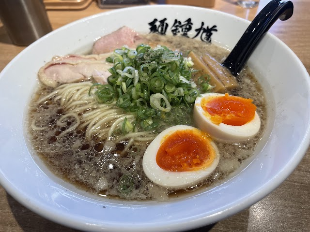
| 営業時間 | 月・水・木・金・土・日 11:00〜15:30, 17:00〜20:00 |
|---|---|
| 定休日 | 火曜 |
| 住所 | 北海道札幌市東区北２６条東１丁目２−２５ ノース２６ |
| 予約 | 要確認 — ☎ 011-768-8029 ／ 公式サイト |
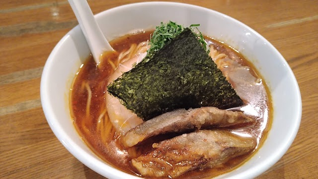
| 営業時間 | 火・水・木・金・土 11:00〜15:00, 18:00〜20:00 ／ 日 11:00〜15:00 |
|---|---|
| 定休日 | 月曜 |
| 住所 | 北海道札幌市白石区菊水元町４条２丁目１−７ 古川ビル 1F |
| 予約 | 要確認 — ☎ 011-871-3922 ／ 公式サイト |
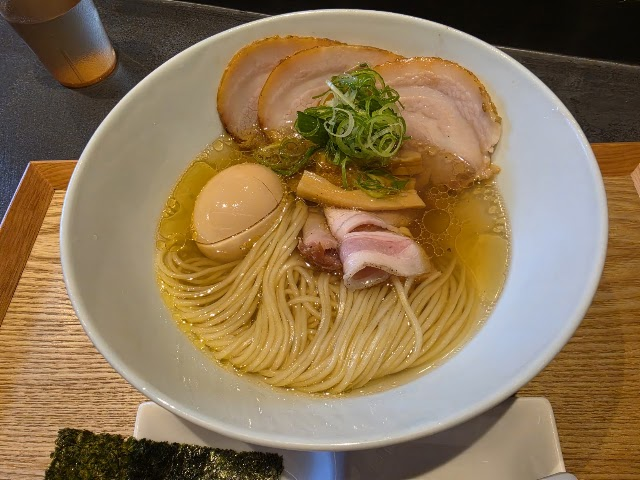
| 営業時間 | 月・火・水・木・金・土・日 11:00〜14:30 |
|---|---|
| 定休日 | なし(要最終確認) |
| 住所 | 北海道札幌市中央区北１条西２７丁目２−１３ リバーサウス円山 1F |
| 予約 | 要確認 — ☎ 011-624-6669 ／ 公式サイト |
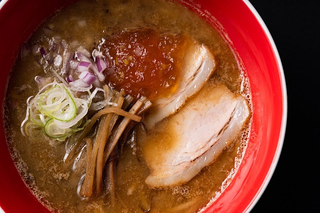
| 営業時間 | 月・火・木・金・土・日 11:00〜15:00, 17:00〜21:00 |
|---|---|
| 定休日 | 水曜 |
| 住所 | 北海道札幌市豊平区平岸２条１１丁目１−１２ |
| 予約 | 要確認 — ☎ 011-813-7233 ／ 公式サイト |
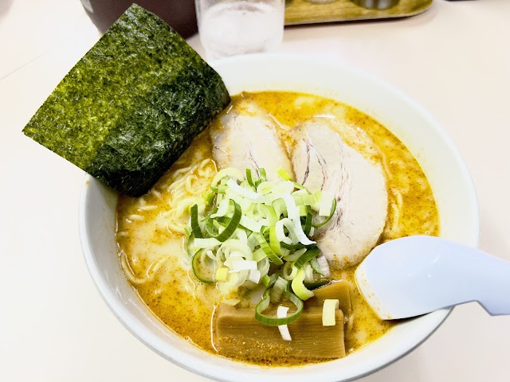
| 営業時間 | 月・水・木・金・土・日 11:00〜2:30 |
|---|---|
| 定休日 | 火曜 |
| 住所 | 北海道札幌市中央区南７条西８丁目１０２４−２４ |
| 予約 | 要確認 — ☎ 011-561-3656 ／ 公式サイト |
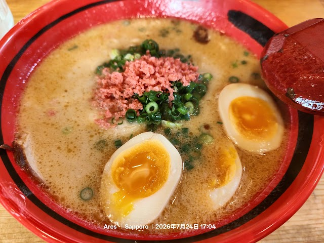
| 営業時間 | 月・火・水・木・金・土・日 11:00〜3:00 |
|---|---|
| 定休日 | なし(要最終確認) |
| 住所 | 北海道札幌市中央区南７条西９丁目１０２４−１０ |
| 予約 | 要確認 — ☎ 011-513-0098 ／ 公式サイト |
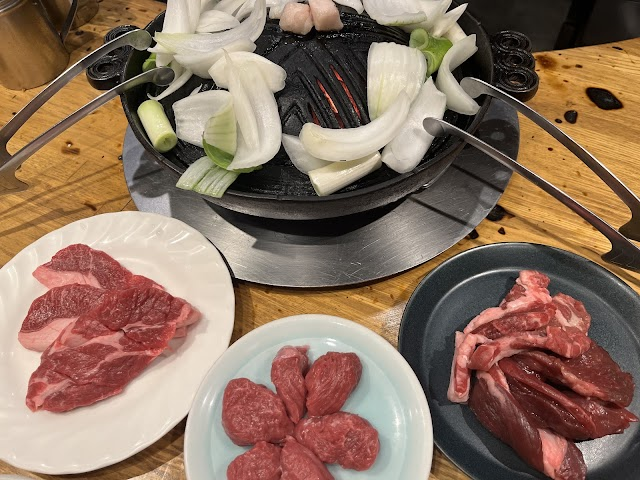
| 営業時間 | 月・火・水・木・金・土・日 17:00〜5:00 |
|---|---|
| 定休日 | なし(要最終確認) |
| 住所 | 北海道札幌市中央区南５条西４丁目４ 1F |
| 予約 | 要確認 — ☎ 011-552-6013 ／ 公式サイト |
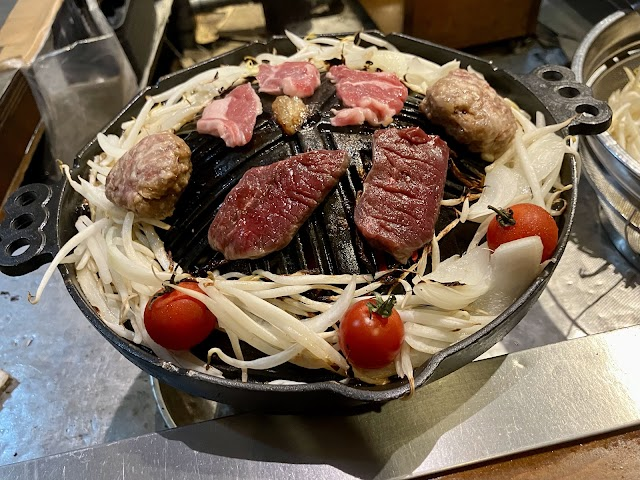
| 営業時間 | 月・火・水・木・金・土・日 11:30〜14:30, 16:00〜0:00 |
|---|---|
| 定休日 | なし(要最終確認) |
| 住所 | 北海道札幌市中央区南４条西４丁目１３番地２ 1階 |
| 予約 | 可 — ☎ 011-271-2853 ／ 公式サイト |
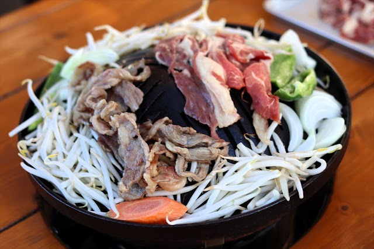
| 営業時間 | 月・火・木・金・土・日 11:00〜20:00 |
|---|---|
| 定休日 | 水曜 |
| 住所 | 北海道札幌市豊平区月寒東３条１１丁目２−５ |
| 予約 | 可 — ☎ 011-851-8014 ／ 公式サイト |
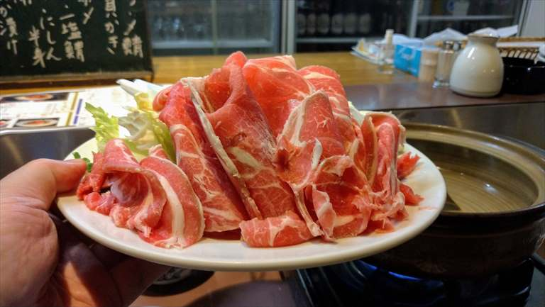
| 営業時間 | 17:00〜23:00 |
|---|---|
| 定休日 | 日曜・祝日 |
| 住所 | 北海道札幌市北区北７条西５丁目 ジンギスカン義経 |
| 予約 | 要確認 |
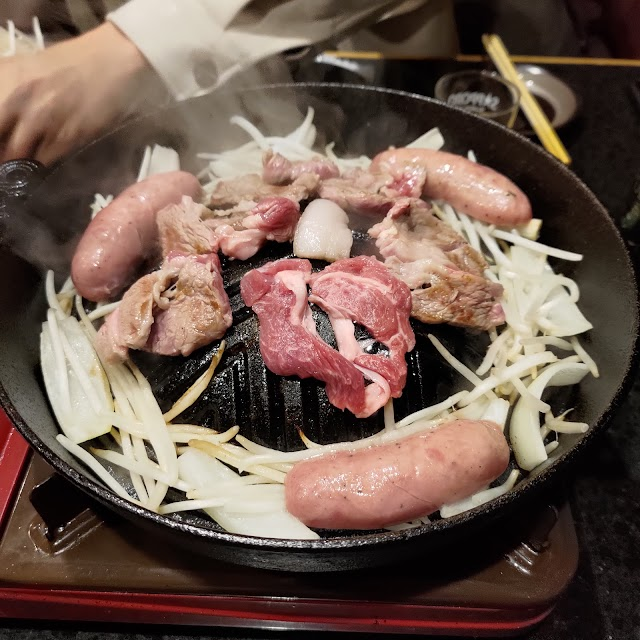
| 営業時間 | 月・火・水・木・金・土 17:00〜0:00 |
|---|---|
| 定休日 | 日曜 |
| 住所 | 北海道札幌市中央区南３条西６丁目１０ 狸小路市場 内 |
| 予約 | 可 — ☎ 011-221-5208 |
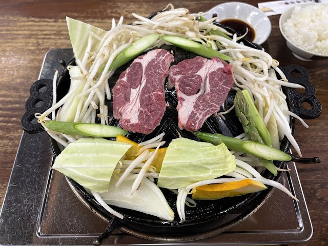
| 営業時間 | 火・水・木・金・土・日 17:00〜21:30 |
|---|---|
| 定休日 | 月曜 |
| 住所 | 北海道札幌市中央区南８条西５丁目 キャピタルＹＭＤ 1F |
| 予約 | 可 — ☎ 011-512-6598 ／ 公式サイト |
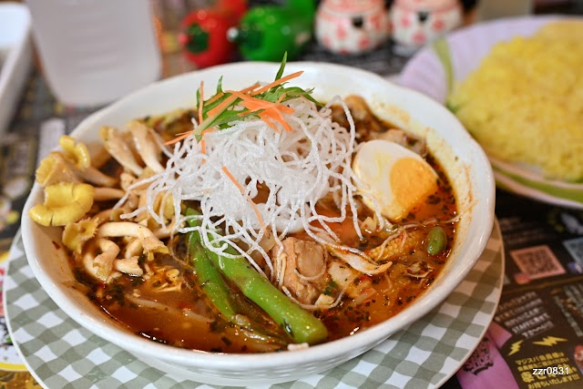
| 営業時間 | 月・火・金 11:00〜15:00, 17:30〜22:00 ／ 土・日 11:00〜22:00 |
|---|---|
| 定休日 | 水・木曜 |
| 住所 | 北海道札幌市白石区本郷通８南６−２ |
| 予約 | 可 — ☎ 011-864-8800 ／ 公式サイト |
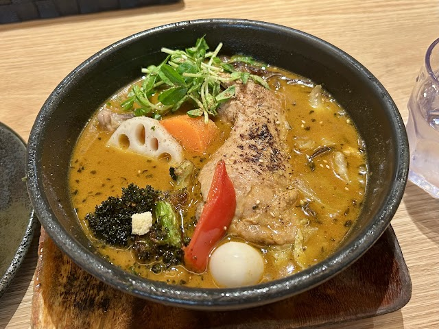
| 営業時間 | 月・火・水・木・金・土・日 11:30〜15:00, 17:00〜20:30 |
|---|---|
| 定休日 | なし(要最終確認) |
| 住所 | 北海道札幌市中央区南３条東２丁目6−１ プレサント南３東２ B1F |
| 予約 | 要確認 — ☎ 011-252-9843 ／ 公式サイト |
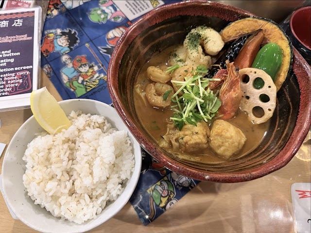
| 営業時間 | 火・水・木・金・土・日 11:00〜15:00, 17:00〜20:30 |
|---|---|
| 定休日 | 月曜 |
| 住所 | 北海道札幌市中央区南１条西５丁目１６ 地下１階 |
| 予約 | 要確認 — ☎ 011-596-6552 ／ 公式サイト |
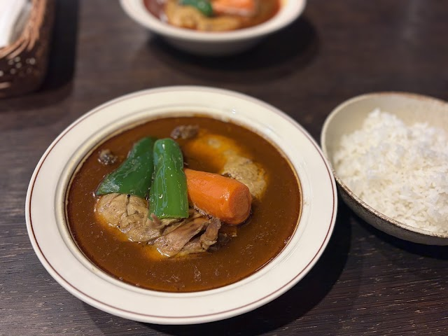
| 営業時間 | 月・火・水・木・金・土・日 11:00〜15:00, 17:00〜20:00 |
|---|---|
| 定休日 | なし(要最終確認) |
| 住所 | 北海道札幌市東区北２３条東２０丁目２−１８ |
| 予約 | 可 — ☎ 011-784-8910 ／ 公式サイト |
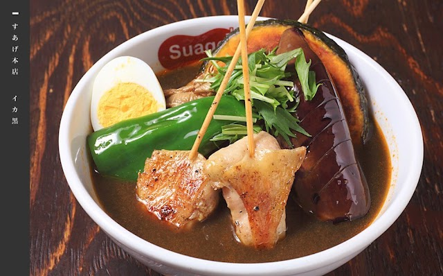
| 営業時間 | 月・木 11:30〜20:30 ／ 火・水・金 11:30〜21:00 ／ 土・日 11:00〜21:00 |
|---|---|
| 定休日 | なし(要最終確認) |
| 住所 | 北海道札幌市中央区南４条西５丁目６−１ 都志松ビル ２階 |
| 予約 | 要確認 — ☎ 011-233-2911 ／ 公式サイト |
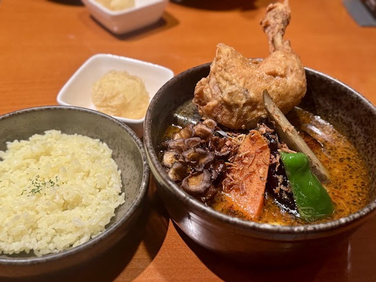
| 営業時間 | 月・火・水・金・土・日 11:30〜22:00 |
|---|---|
| 定休日 | 木曜 |
| 住所 | 北海道札幌市北区北１３条西３丁目２−２３ アクロビュー北大前 1F ＡＣＲＯ ＶＩＥＷ ＨＯＫＵＤＡＩＭＡＥ |
| 予約 | 可 — ☎ 011-737-1600 ／ 公式サイト |
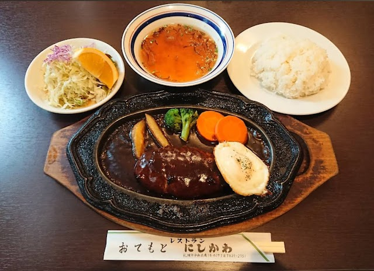
| 営業時間 | 月・火・水・木・金・土 11:00〜15:00, 17:30〜20:00 |
|---|---|
| 定休日 | 日曜 |
| 住所 | 北海道札幌市中央区南１条西１９丁目 |
| 予約 | 可 — ☎ 011-621-2751 ／ 公式サイト |
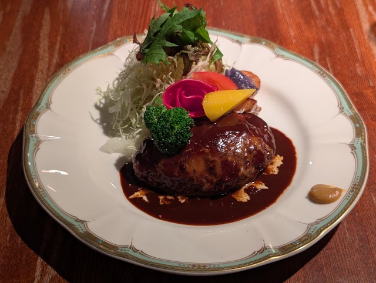
| 営業時間 | 火・水・木・金・土 11:30〜14:30, 17:30〜20:00 ／ 日 11:30〜15:00, 17:30〜20:00 |
|---|---|
| 定休日 | 月曜 |
| 住所 | 北海道札幌市中央区南１条西５丁目 プレジデント松井ビル １００地下1階 |
| 予約 | 可 — ☎ 011-252-3711 |
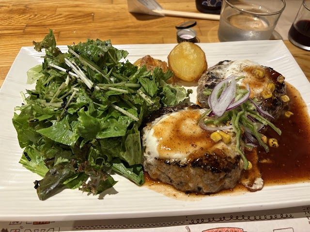
| 営業時間 | 月・火・水・木・金・土・日 11:30〜15:00, 17:30〜22:00 |
|---|---|
| 定休日 | なし(要最終確認) |
| 住所 | 北海道札幌市中央区南２条西１丁目 マリアールビル B1 |
| 予約 | 可 — ☎ 011-218-8809 ／ 公式サイト |
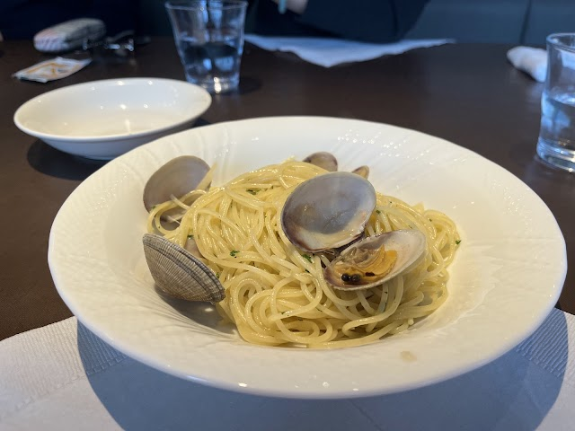
| 営業時間 | 月・火・水・木・金・土・日 11:30〜15:00, 17:30〜22:00 |
|---|---|
| 定休日 | なし(要最終確認) |
| 住所 | 北海道札幌市中央区南１条西６丁目 第27桂和ビル 2階 |
| 予約 | 可 — ☎ 011-221-3314 ／ 公式サイト |
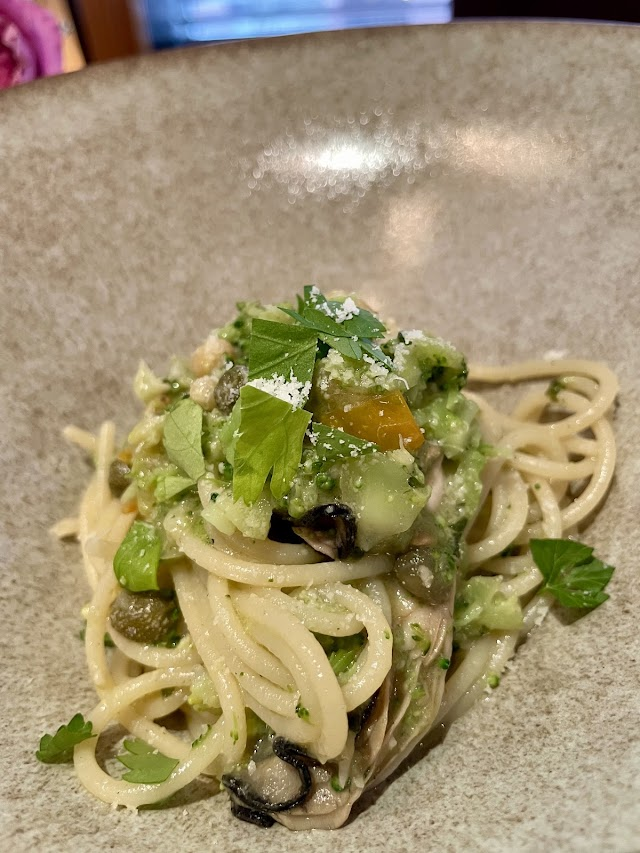
| 営業時間 | 月・火・水・木・金・土・日 11:30〜13:00, 18:00〜20:00 |
|---|---|
| 定休日 | なし(要最終確認) |
| 住所 | 北海道札幌市中央区南２条西１丁目１−２ |
| 予約 | 可 — ☎ 011-242-0808 ／ 公式サイト |
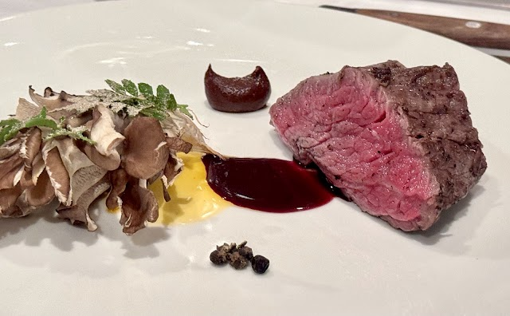
| 営業時間 | 月・木・金・土・日 11:30〜15:00, 17:30〜21:00 |
|---|---|
| 定休日 | 火・水曜 |
| 住所 | 北海道札幌市中央区宮ケ丘２丁目１−１ ラファイエット宮ケ丘 1F |
| 予約 | 可 — ☎ 011-631-3155 ／ 公式サイト |
| 営業時間 | 月・火・金・土 18:00〜20:00 ／ 日 12:00〜14:30 |
|---|---|
| 定休日 | 水・木曜 |
| 住所 | 北海道札幌市中央区北３条西２７丁目２−１６ |
| 予約 | 可 — ☎ 011-612-9003 ／ 公式サイト |
| 営業時間 | 月・火・水・木・金・土 17:00〜23:30 |
|---|---|
| 定休日 | 日曜 |
| 住所 | 北海道札幌市中央区南４条西３丁目 ニュー北星ビル ４Ｆ |
| 予約 | 可 — ☎ 011-222-0298 ／ 公式サイト |
| 営業時間 | 月 11:00〜14:30 ／ 水・木・金・土・日 11:00〜14:30, 17:00〜21:00 |
|---|---|
| 定休日 | 火曜 |
| 住所 | 北海道札幌市中央区南１７条西６丁目４−１ ラパンビル 1F |
| 予約 | 可 — ☎ 011-512-2695 ／ 公式サイト |
| 営業時間 | 月・火・水・木・金・土・日 11:00〜14:30, 17:00〜21:30 |
|---|---|
| 定休日 | なし(要最終確認) |
| 住所 | 北海道札幌市中央区南１条西９丁目5−１ 札幌１９Ｌビル 1階 |
| 予約 | 可 — ☎ 011-272-4050 ／ 公式サイト |
| 営業時間 | 月・火・水・木・金・土・日 11:30〜15:00, 17:00〜22:30 |
|---|---|
| 定休日 | なし(要最終確認) |
| 住所 | 北海道札幌市中央区南６条西２丁目８−４ 札幌プリンス6・2ビル 2階 |
| 予約 | 可 — ☎ 011-513-0062 ／ 公式サイト |
| 営業時間 | 月・火・木・金・土 11:00〜14:15 |
|---|---|
| 定休日 | 水・日曜 |
| 住所 | 北海道札幌市中央区大通西６丁目１０−１１ 北都ビル B1F |
| 予約 | 可 — ☎ 011-200-0586 |
| 営業時間 | 月・火・水・木・金・土・日 11:00〜21:00 |
|---|---|
| 定休日 | なし(要最終確認) |
| 住所 | 北海道札幌市中央区南３条西２丁目１６−４ |
| 予約 | 要確認 — ☎ 011-231-3440 ／ 公式サイト |
| 営業時間 | 月・火・水・木・金・土・日 11:00〜14:30, 17:00〜22:00 |
|---|---|
| 定休日 | なし(要最終確認) |
| 住所 | 北海道札幌市中央区南３条西５丁目１４ 三条美松ビル B1F |
| 予約 | 可 — ☎ 011-232-5665 ／ 公式サイト |
| 営業時間 | 火・水・木 16:00〜22:00 ／ 金 16:00〜23:00 ／ 土 11:00〜14:00, 16:00〜23:00 ／ 日 11:00〜14:00 |
|---|---|
| 定休日 | 月曜 |
| 住所 | 北海道札幌市中央区南９条西３丁目１−１１ ドエル中島公園 1F |
| 予約 | 可 — ☎ 011-839-1121 ／ 公式サイト |
| 営業時間 | 火・水・木・金・土・日 11:00〜14:30, 17:00〜21:30 |
|---|---|
| 定休日 | 月曜 |
| 住所 | 北海道札幌市中央区北１３条西１６丁目１−１１ ラフォーレ桑園 1F左 |
| 予約 | 可 — ☎ 090-1527-4668 ／ 公式サイト |
| 営業時間 | 火・水・木・金・土・日 11:30〜15:00, 17:00〜22:00 |
|---|---|
| 定休日 | 月曜 |
| 住所 | 北海道札幌市中央区南４条西５丁目１０ 第４藤井ビル 5F |
| 予約 | 可 — ☎ 050-5484-5096 ／ 公式サイト |
| 営業時間 | 月・火・水・木・金・土・日 10:00〜19:00 |
|---|---|
| 定休日 | なし(要最終確認) |
| 住所 | 北海道札幌市中央区北２条西３丁目１−３１ 太陽生命札幌ビル 1階 |
| 予約 | 要確認 — ☎ 011-251-7530 ／ 公式サイト |
| 営業時間 | 月・火・水・木・金・土・日 10:00〜17:30 |
|---|---|
| 定休日 | なし(要最終確認) |
| 住所 | 北海道札幌市中央区北４条西６丁目３−３ |
| 予約 | 要確認 — ☎ 0120-126-666 ／ 公式サイト |
| 営業時間 | 月・火・水・木・金・土・日 10:00〜18:00 |
|---|---|
| 定休日 | なし(要最終確認) |
| 住所 | 北海道札幌市中央区北１条西５丁目1−２ |
| 予約 | 要確認 — ☎ 0800-500-0318 ／ 公式サイト |
| 営業時間 | 月・火・木・金・土・日 10:00〜18:00 |
|---|---|
| 定休日 | 水曜 |
| 住所 | 北海道札幌市中央区大通西２丁目５−１ 都心ビル B3F |
| 予約 | 要確認 — ☎ 011-221-4220 ／ 公式サイト |
| 営業時間 | 月・火・水・木・金・土・日 9:00〜19:00 |
|---|---|
| 定休日 | なし(要最終確認) |
| 住所 | 北海道札幌市中央区南２条西２６丁目２−１８ |
| 予約 | 要確認 — ☎ 0800-111-4883 ／ 公式サイト |
| 営業時間 | 月・火・水・木・金・土・日 10:00〜21:00 |
|---|---|
| 定休日 | なし(要最終確認) |
| 住所 | 北海道札幌市中央区南２条西２８丁目１ |
| 予約 | 要確認 — ☎ 011-641-7277 ／ 公式サイト |
| 営業時間 | 月・火・水・木・日 13:00〜0:00 ／ 金・土 13:00〜1:00 |
|---|---|
| 定休日 | なし(要最終確認) |
| 住所 | 北海道札幌市中央区南１条西２丁目1−２ 木Ninaru Bldg. 1F-3F |
| 予約 | 要確認 — ☎ 011-233-3007 ／ 公式サイト |
| 営業時間 | 月・火・水・木・日 18:00〜0:00 ／ 金・土 18:00〜2:00 |
|---|---|
| 定休日 | なし(要最終確認) |
| 住所 | 北海道札幌市中央区南４条西２丁目１０−１ 南４西２ビル 6F |
| 予約 | 要確認 — ☎ 011-200-0559 ／ 公式サイト |
| 営業時間 | 月・火・水・木・金・土・日 10:00〜21:00 |
|---|---|
| 定休日 | なし(要最終確認) |
| 住所 | 北海道札幌市中央区大通西１丁目１３ ル・トロワ １階 |
| 予約 | 要確認 — ☎ 011-210-5252 ／ 公式サイト |
| 営業時間 | 月・火・水・木・金・土・日 10:00〜20:00 |
|---|---|
| 定休日 | なし(要最終確認) |
| 住所 | 北海道札幌市中央区大通西３丁目７ 北洋大通センタ 1階 |
| 予約 | 要確認 — ☎ 011-233-6161 ／ 公式サイト |
| 営業時間 | 月・火・水・木・金・土・日 9:30〜20:00 |
|---|---|
| 定休日 | なし(要最終確認) |
| 住所 | 北海道札幌市南区澄川４条２丁目９−１ |
| 予約 | 要確認 — ☎ 011-822-1887 ／ 公式サイト |
| 営業時間 | 月・火・水・木・金・土・日 9:00〜18:00 |
|---|---|
| 定休日 | なし(要最終確認) |
| 住所 | 北海道札幌市豊平区平岸２条６丁目２−２７ 珈房サッポロ珈琲館 |
| 予約 | 要確認 — ☎ 011-814-0141 ／ 公式サイト |
本ガイドは個人利用目的で作成。掲載情報は2026年8月時点の調査に基づく。写真出典: Google Maps投稿写真(©各投稿者/Google)。